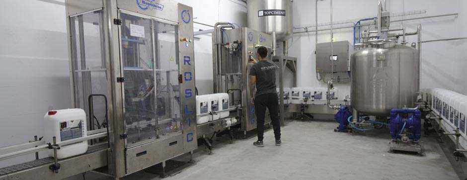

À notre sujet
Topciment nous sommes l'entreprise le plus grand fabricant de béton ciré en espagne et avec le plus d'expérience sur le marché
Notre projet à commencer en 2005 .Et depuis , nous n'avons pas cesser de croitre
Notre objectif etait et est de créér un béton ciré de haute qualité avec des
prestations optimum et à un prix compétitif .
Mais pas seulement ça .
Par notre envie d'évoluer , nous produisons aussi des matériaux qui sont
directement en relation avec le béton ciré , comme des scellant primaires et
nettoyants , entre autres.
L'expérience et la spécialisation en revètement décoratifs , nous à positionné comme un référent dans le secteur . La finalité principale est de continuer à innover sur nos produits pour les doter des prestations de dernière génération.
Notre philosophie repose sur 7 piliers très solides:

Fabrication
Chez Topciment, nous fabriquons tous les produits que nous commercialisons. Ainsi, nous assurons le contrôle et leur qualité lors des processus d’élaboration. Nous voulons vous offrir toujours le meilleur.

Distribution
Nous travaillons avec un réseau de distributeurs présents dans plus de 58 pays.
Si votre objectif est de devenir un distributeur de béton ciré Topciment, en
contribuant à notre processus d’amélioration et d’expansion continue pour
apporter plus de valeur à notre entreprise,vous serez le bienvenu.
Formation
Le résultat final dans l’application de nos produits est important pour nous, c’est pourquoi nous pensons et misons sur la formation continue des distributeurs et applicateurs. Nous offrons des cours théoriques-pratiques certifiés au niveau expert.
Conseils
Nous disposons d’un personnel qualifié dans l’application de béton ciré capable de répondre, immédiatement, à toutes les questions. Nous mettons à la disposition de nos distributeurs et applicateurs toute notre expérience et connaissance face à tout doute pouvant surgir.
R+D
Notre principal moteur est la recherche et développement . Avec un travail et des efforts constants nous avons réussit à créer des produits spécifiques qui s'adaptent aux nécessitées du marché. Nos produits apportent des avantages diférentiels aux professionnels du batiment , de la décoration et aussi aux particuliers.
Logistique
Notre objectif est de satisfaire la demande dans les meilleures conditions de service . cout et qualité. Nous travaillons avec diférentes agences pour garantir la livraison rapide et efficace de nos produits.

Environnement
Nous nous soucions de l’environnement. C’est pourquoi nous avons acquis un engagement et nos produits sont fabriqués à partir de matériaux naturels et de matières premières minérales pour qu’ils respectent l’environnement qui nous entoure. Les résines et vernis sont à base d’eau, nous n’utilisons pas de dissolvants, et les matières premières de fabrication sont obtenues de zones de proximité, pour réduire au maximum l’empreinte écologique. Le produit est élaboré selon les besoins des travaux et les quelques déchets générés sont facilement recyclables.
Concernant la fabrication de mortiers techniques et microciments
Chez Topciment , nous avons plus de 15 ans d'expérience dans notre secteur . Avec pour objectif de fournir a nos clients un produit de haute qualité à des prix compétitifs ,nous vous accompagnons avec des conseils et une attention personnalisée depuis le premier instant.
La qualité de nos produits est le résultat d'un feedback continue entre clients et nos techniciens chargés de développer le produit en usine .Cette expérience est transmise a nos clients professionnels à l'aide de formation et conseil technique permanent de la part de notre équipe commerciale hautement formée.

Conseil technique et commercial
Nous offrons à nos clients une atention personalisée de la part d'une équipe de professionels du béton ciré , toujours prêt à recommander les produits necessaires pour travailler correctement avec le revêtement et offrir un support technique .
Nous avons un service de conseil technique et commerciale avec attention téléphonique et à travers une messagerie instantanée. N'hésitez pas à demander conseil et connaître tous les trucs et astuces.
Topciment - Siège social
Nous sommes conscient du manque d'information sur le béton ciré. Les avantages de ces revêtements sont nombreux et ses caractéristiques sont en majorité inconnues .
Pour cela , nous donnons cours de formations d'initiations et niveau avancés une fois par mois au sein de nos instalations à Valencia. Cette formation est payante et complétement remboursable lors d'une prochaine commande. Contactez nous pour de plus amples informations.